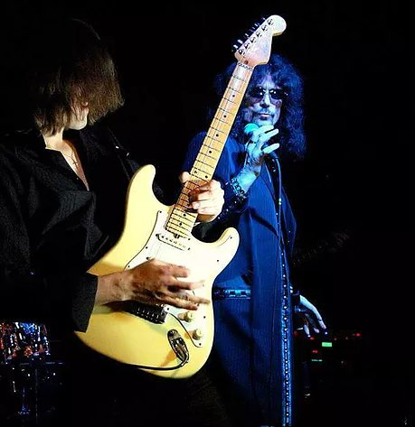
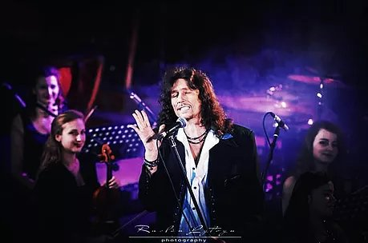
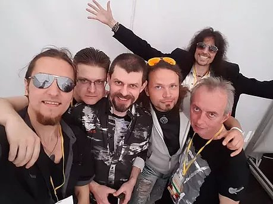
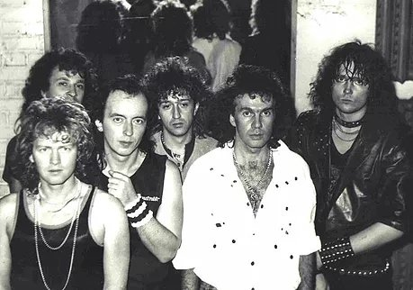
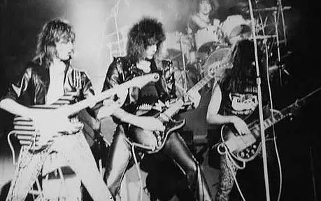
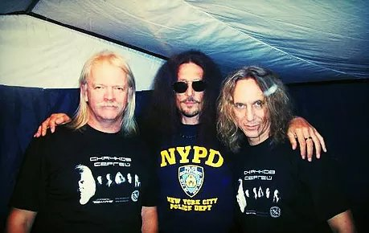
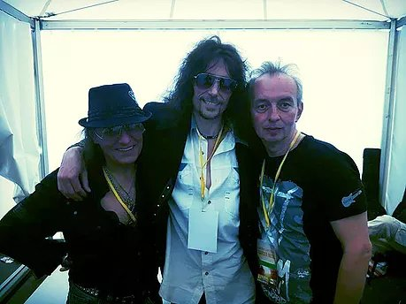
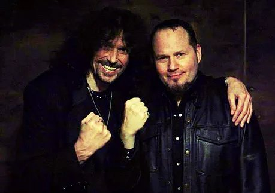
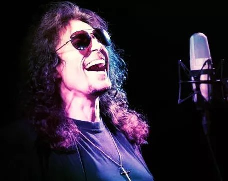

БІО
 ENG
ENG UKR
UKR RU
RU
Виступ з Симфонічним оркестром під керуванням Миколи Орача. Львів.
З Романом Ліщинським... Beatles - триб'ют. 2015.

На благодійному концерті у Львові, 2016
Виступ із Royal Orchestra. Львів, Філармонія,2015
Група "GALAXY" на фестивалі "Garden Music" 2015
Група "Галактика" - перший склад, 1987 рік

Група "GALAXY" - американський склад

Поміж зйомками...
З Сергієм Cкачковим (група"Землянє") та Олегом Ховріним... 2012
З Сергієм Чентурия та Вячеславом Василенко, 2015
З Енвером Ізмайловим, 2013
З Тімом (Ріппер) Оуенс - вокалістом групи "Judas Priest" - на спільному виступі, 2014

З групою "SINCHUK BAND"

Запис на студії...


Каріна Плай
 "Абсолютно блискуче. "
- Bob Harris BBC Radio 2
« "Galaxy" Сінчука - чудова група, я дуже радію,що хлопці знову зібралися, обов"язково приїду до вас на "Galaxy-ROCK"».
- Phil Collins
Вячеслав Синчук -
рок-музикант, співак і композитор, гітарист, лідер гурту «Галактика», учасник груп «Фаворити" та "Червоні маки». Народився 6 січня 1964 у Львові в українсько-шотланской сім'ї. Дід Слави спілкувався з онуком англійською, а батько навчав Славу музиці з самого раннього дитинства. Ще будучи школярем Слава закінчив п'ять класів музичної школи по класу баяна, а також займався боротьбою, самбо, карате та подавав великі надії в професійних спортивних колах ..Першу свою групу Слава зібрав ще навчаючись в старших класах, назвавши її «Teen Gentleman". Хлопці грали кавери на популярні в той час пісні «Deep Purple", "Nazareth", "Black Sabbath" і т.д. Славу навіть прозвали "Nazareth", що надовго стало його другим ім'ям. Так як в той час співати пісні перерахованих вище груп вважалося мало не злочином, групу досить часто переслідували неприємні розмови з дирекцією школи і навіть з правоохоронними органами, тим більше, що кожен виступ групи закінчувалося поламаними стільцями в спортзалах, розбитими вікнами і т.д. Саме з цієї причини Слава почав писати свої перші власні пісні ... Після закінчення школи тренера Слави пророкували йому блискуче майбутнє в спорті і всіляко намагалися схилити його до надходження в Інфіз, але у Слави були свої плани. Він постійно слухав рок музику, платив на той час чималі гроші за записи з платівок і сам навчався грі на гітарі. Одного разу відразу після закінчення школи до Слави навідалися довговолосі симпатичні хлопці, дуже схожі на "фірмових рокерів". Запросили на репетицію і запитали чи не хотів би він співати з ними. Слава, не вірячи в те, що в СРСР можуть бути музиканти класу "Deep Purple" або "Nazareth" відмовився. Але хлопці виявилися наполегливими і в один з днів просто приїхали на машині і повезли Славу на свою репетицію. Звичайно, до вище зазначених груп вони злегка не дотягували, але, на погляд Слави, це було десь близько. Так Слава Синчук потрапив в рок-команду "Фаворити". Почалися гастролі, концерти і зовсім нове життя. Виконувала група свої пісні,що по стилю дуже нагадували "Deep Purple", тому з перепонами здавала програму "орденоносній" і не розумієчій в стилі РОК Худраді, вдаючись до різного роду хитрощів і називаючи авторами своїх пісень відомих радянських композиторів і поетів, тільки тому отримуючи дозвіл на гастрольну діяльність. Пізніше Славу запросили в групу "Круїз", але доля розпорядилася так, що попрямувавши в Москву для роботи в "Круїз", Слава потрапив в групу "Червоні Маки". Там Слава познайомився з гітаристом і композитором Сєвою Татаренко, а через деякий час разом із ним пішов з "Маків". Так народилася група "Галактика". GALAXY "Галактика" стала однією з найпопулярніших і відомих груп СРСР, збираючи з незмінними аншлагами стадіони і Палаци Спорту по всьому Союзу. Хлопці працювали на знос, іноді по 4 концерти в день. Було записано і видано чотири альбоми на всесоюзній "Мелодії", їх спіткав фантастичний успіх у продажу по всій країні. Це був час нереальної популярності, затребуваності, але також повного фізичного і морального виснаження. Перший склад розпадається. ........................................ Галактика залишається за Сінчуком. Трохи відпочивши і прийшовши до тями, Слава наполегливо шукає музикантів, тих кращих, які могли б його влаштувати. Так народилася нова "американська" Галактика - "GALAXY". Далі репетиції нового матеріалу і запис першого в СРСР альбому (на тій же Мелодії) англійською мовою і успіх цього альбому - кілька перевидань тиражів. Тож не дивно, що групу під своє "крило" бере продюсер Ованес Мелік-Пашаєв, підписує з групою контракт, і GALAXY їде в США. Історія в двох словах сталася так: американці, які приїхали купувати кращу групу у Ованеса, проходили повз залу де репетирувала Галактика. Почувши музикантів вони просто сказали: "Ми купуємо ЦЕ!".Ось так продюсер Ованес Мелік-Пашаєв повіз Славу і GALAXY в США, де п'ять років група давала концерти і виступала на різних фестивалях, а також в легендарних клубах. В Америці "Галактика" записала ще один англомовний альбом, автор всіх пісень якого - В'ячеслав Сінчук (тексти, музика, аранжування). У 1996 році за результатами опитування журналу "New Metal" В'ячеслав Сінчук посів 8 місце в першій десятці кращих рок-співаків світу. Це була чесна і справжня перемога. Група вразила скептично налаштованих американців, більш того, вони називали "GALAXY" музикою, випереджаючою час. Яскраво виражений стиль і професіоналізм найвищого гатунку не могли не помітити і інші продюсери - серйозні гравці американського шоу-бізнесового ринку. "Bad Company", "Motley crue", "Steppen Wolf", Donna Sammer - всім був потрібен STEEVE SINCHUK, як називали американці Славу, але не група Galaxy, яка на той момент ставала небажаним конкурентом місцевим рок-командам. Розвитку групі не давали, а Славу з його блискучими даними рвали по частинах і перетягували в інші проекти. Перед молодим артистом встав вкрай складний вибір. І Слава зробив несподівано для всіх: тому що всі хлопці американської Галактики вирішили залишитися в Америці, Слава поодинці повертається в Україну щоб підняти рок-музику у себе на Батьківщині і знову створити свою легендарну GALAXY, свою українську рок-групу . .............. ........................ У 1996 році натхненний цією ідеєю Синчук повертається на Україну і потрапляє в абсолютно інший музичний вимір , де тільки лише починає розвиватися молода українська естрада, замішана на фольк- і поп- основі. Мелодійний хард енд хеві вважався в той час і продовжує вважатися донині Неформатом. У своєму прагненні довести, що українська рок-музика може збирати стадіони, Слава об'єднується зі складом першої Галактики і хлопці дають легендарний концерт "Галактика - РОК", куди запрошують кращі рок-групи України і Росії. Концерт проходить на УРА! Але ... принципово рок-музика так і залишається комерційно непривабливою в індустрії українського шоу-бізу. З ентузіазмом Слава починає створювати нову програму, пише пісні, співпрацює з продюсерами і відчуває, що його музика тут чужа. ........................................ Починається складний переломний етап, коли Слава намагається довести суспільству, що високий професіоналізм, мелодійність і світовий рівень звучання - це і є український рок-формат . Але на жаль, тільки но народжений український шоу-біз проходить свою стадію ідентифікації і йде своїм шляхом, дуже далеким від світового . Після багаторазових спроб щось змінити на Батьківщині, натикнувшись на стіну нерозуміння рок-музики як культури в медіа, відчувши себе чужим, Слава всеж-таки вирішує перш за все не зраджувати собі і своїм смакам. Він не залишає ідею створити українську Галактику. Концертуя з кращими симфонічними оркестрами країни, він всеж-таки розвиває свій колишній рок-напрямок, пише нові пісні і стає практично легендою, тому що його вокал, манера, драйв, смак і харизма досі дивують знавців і є абсолютно унікальними. Знаючи його жорстку принциповість, Славу часто запрошують до складу журі музичних конкурсів,він погоджується навчати вокалу і грі на гітарі молодих виконавців, таким чином передаючи свій досвід і смак молодим артистам. Про скромність рок-зірки ходять легенди, тому абсолютно не дивує шанувальників те, що Слава не частий гість тусовок і світських заходів, він також відмовився від співпраці з піар-службою, щиро заявляючи, що він любить музику в собі, а не себе в музиці . Безумовно, всі ці накопичені протиріччя у вигляді повного визнання музики Сінчука в США і нерозуміння її жанру в рідній країні морально вбивали артиста. А відсутність глобальної арт-підтримки та серйозного бізнес партнера по причині "некомерційного жанру" і, як наслідок, неможливість в глобальному масштабі розвинути і підняти рок-жанр у себе в країні (про що Слава мріяв коли покидав Америку) - все це не могло не позначитися на його здоров"ї.В результаті стрес, лікарня, реанімація, клінічна смерть. І ... .............Переродження............ Звістка миттю поширилася. Музична громадськість була шокована. І шокована ще більше, коли через місяць після здавалося б неможливого лікування і клінічної смерті Слава вже стояв на сцені. "Я бачив Діву Марію, це вона врятувала мене." - говорить Слава і з вдячністю хреститься кожен раз, проїжджаючи повз Церкви. Все це неймовірно, але це факт, як і інші неймовірні ситуації, що регулярно відбувалися в житті артиста. А їх таких було кілька, і за дивною незрозумілою "випадковістю" Сінчук залишався цілий, живий і продовжував співати і творити. ...................... ........... У 2015 році Слава, заручившись студійної підтримкою Мike Skyborn Kravets, вирішує дати Galaxy ще один шанс. Залишаючись, як і раніше, лідером групи, вокалістом, композитором, аранжувальником і гітаристом, Синчук проводить жорсткий відбір в свою команду. В цей же час він знайомиться зі співачкою і композитором Каріною Плай. Їх музичні смаки і манера виконання настільки збігаються, що Слава тут же запрошує Каріну в свою оновлену GALAXY, а також пропонує створити новий дуетний проект. На сьогоднішній день на виході три альбоми. Альбом "GALAXY", дуетний альбом Каріни Плай та Слави Синчука, а також диско альбом Каріни, в якому Слава виступив не тільки композитором, аранжувальником, а й музичним продюсером.
Дискография
1. "В атмосфере гласности"
2. "Всё как в сказке"
3. Рок-Панорама 1987
4. GALAXY 5. Made in USA
6. Lost in Heaven
7. Gladiator ( feat. Andrey Smirnov)
8. Heart of Stone
9. Wings of Love ( feat. Karina Plai ) - unrelease yet